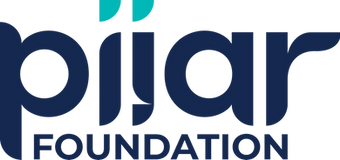
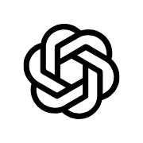
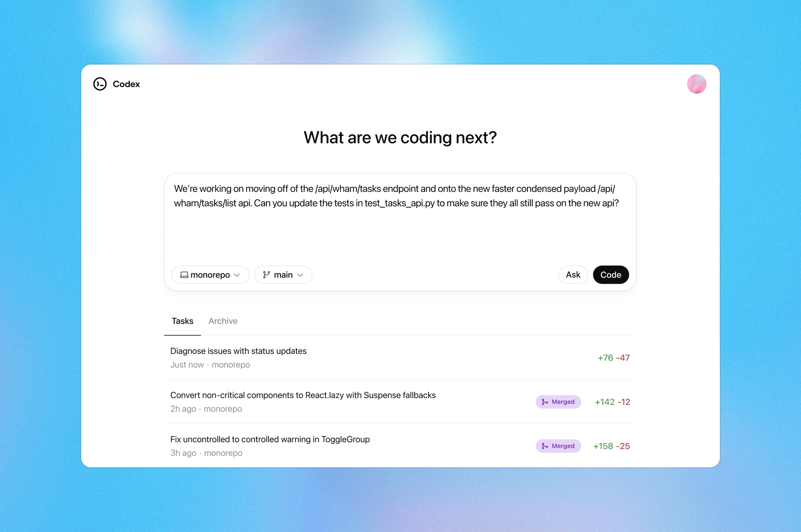

AGENTIC AI FOR PIJAR WORKFLOWS

Dari Chatbot ke AI Agent
Agentic AI for Pijar Workplace Productivity
Ahmad Ataka Awwalur Rizqi
Audience variant for Yayasan Pijar Masa Depan
July 22, 2026
July 22, 2026
Pembuka
Pertanyaan cepat
Siapa yang sudah pakai ChatGPT atau Gemini untuk kerja program?
- merapikan update mitra?
- menyusun brief program?
- membuat draft policy note?
- tapi apakah workflow tim benar-benar berubah?
Impact sudah jalan.
Workflow bisa makin cerdas.
Workflow bisa makin cerdas.
AI bukan gimmick,
tapi leverage untuk koordinasi.
Pesan Utama Talk Ini
AI yang berguna bukan
yang paling canggih.
yang paling canggih.
AI yang berguna adalah yang masuk ke ritme kerja program dengan aman dan jelas.
Fokus kita: mempercepat kerja lintas program, mitra, riset, komunikasi, dan evaluasi.
Konteks Pijar: Banyak Knowledge, Banyak Koordinasi
Dari konteks publik Pijar
- Pijar memosisikan diri sebagai katalis untuk Indonesia 2045.
- Fokus tematiknya mencakup Future Talent dan Future Planet.
- Program seperti Future Skills, Global Future X, dan Future Lestari membutuhkan orkestrasi multi-stakeholder.
Konsekuensi workflow
- Banyak catatan program, update mitra, data kegiatan, dan brief strategis.
- Nilai AI muncul saat membantu menyambungkan dokumen, konteks, dan tindak lanjut.
- Kuncinya bukan otomatisasi penuh, tetapi koordinasi yang lebih cepat dan konsisten.
Disarikan dari laman publik Pijar Foundation dan publikasi program Future Talent Hub/Impact Leaders Fellowship.
Hasil Review Referensi: Apa Lesson Learned-nya?
Adopsi dan produktivitas
- McKinsey (2025): value muncul saat workflow, KPI, dan cara kerja ikut didesain ulang.
- Microsoft WTI (2025): kerja bergeser ke human-agent teams.
- BCG AI at Work (2025): adopsi naik, tetapi training dan trust masih jadi gap.
Cara pakai yang lebih aman
- NIST AI RMF: govern, map, measure, manage.
- OpenAI guidance: use case jelas, konteks cukup, batas data, review manusia.
- Benang merah: AI butuh konteks, batasan, dan evaluasi.
Dari Chatbot ke Agent: Mulai dari Obrolan
Chatbot
Pola: kita bertanya, AI menjawab.
“Tolong jelaskan cara membuat notulen yang baik.”
- hasilnya informatif
- belum tentu langsung siap pakai
- kita masih mengerjakan langkah berikutnya
Dari Chatbot ke Agent: Delegasi ke Asisten
Agent
Pola: kita memberi tujuan, konteks, batasan, lalu review hasilnya.
“Baca catatan rapat ini, susun minutes, buat task list, tandai owner yang belum jelas, dan siapkan draft email follow-up.”
- ada rangkaian langkah
- ada output kerja
- ada review manusia
Kenapa Belum Optimal?
Pola yang sering terjadi
- dipakai hanya saat buntu
- prompt terlalu umum
- output langsung diterima
- use case tidak dekat dengan role
Akibatnya
- hasil generik
- sulit dipakai ulang
- tidak ada standar tim
- manfaatnya terasa acak
Prinsip: AI Masuk ke Ritme Kerja
1. Repetitifmulai dari tugas yang sering diulang
2. Output jelasdraft, tabel, checklist, ringkasan
3. Review manusiaAI membantu, manusia memutuskan
4. Ukurwaktu, kualitas, error, follow-up
Kalau tugasnya sering diulang, lintas dokumen, melibatkan banyak mitra, dan punya format output jelas, itu kandidat bagus untuk AI Agent.
Contoh Praktik untuk Konteks Pijar
Program
- weekly program brief
- laporan kegiatan
- ringkasan feedback
- checklist tindak lanjut
Policy/Research
- policy memo
- stakeholder map
- synthesis desk research
- issue brief
Partnership/Comms
- donor/partner update
- email follow-up
- event recap
- narrative alignment
4 Level Cara Kerja dengan AI
1. Ask AIbertanya sesekali
2. Assist Medraft, ringkas, revisi
3. Work With Meworkflow berulang
4. Delegatetujuan, batasan, review
Anda sekarang ada di level mana? Tim Anda mayoritas ada di level mana?
Desain Workflow Agentic
Inputdata, catatan, dokumen
Stepsbaca, cek, susun, tandai
Outputdraft, task list, checklist
Reviewmanusia cek dan putuskan
Contoh: program brief mingguan
- data kegiatan
- update mitra
- target indikator
Batasan
Jangan mengarang capaian. Tandai data, persetujuan, atau narasi yang belum final.
Prompt yang Siap Dipakai
Struktur
- Goal: hasil akhir
- Context: data/file/sumber
- Constraints: aturan dan batasan
- Done when: definisi selesai
Minta AI menandai bagian yang tidak yakin, bukan menutupinya dengan bahasa yang rapi.
Template Instruksi Agent
Goal:
Bantu saya membuat [output kerja].
Context:
Gunakan [dokumen/data/catatan] berikut.
Constraints:
- Jangan mengarang data.
- Tandai informasi yang belum lengkap.
- Gunakan bahasa [formal/ringkas/ramah].
Done when:
Output berisi draft, checklist revisi,
dan daftar data yang masih perlu ditanyakan.
Etika dan Safety Harian
Boleh
- ringkas dokumen umum
- draft awal
- cek konsistensi
- buat alternatif kalimat
Hati-hati
- data pribadi/sensitif
- keputusan keuangan/legal
- klaim faktual tanpa sumber
- output yang langsung dikirim
Tool Landscape: Pilih Sesuai Tugas
 ChatGPT
ChatGPTGeneral assistant: ide, draft, tanya-jawab, analisis cepat.
 Gemini
GeminiKuat saat kerja dekat dengan Google Workspace dan pencarian.
 Claude
ClaudeDokumen panjang, reasoning, analisis kebijakan, editing naskah.

CodexAgentic workbench: file, folder, otomasi, build, render, test.
Ini bukan perbandingan apple-to-apple. Bandingkan berdasarkan jenis tugas.
Codex dan Claude: Dua Mode Bantuan
Claude cocok untuk
- membaca dokumen panjang
- analisis kebijakan
- merapikan reasoning
- menyusun argumen
Codex cocok untuk
- bekerja dengan folder/file
- membuat template berulang
- otomasi kecil
- cek hasil lewat build/render/test
Codex efektif saat diperlakukan seperti teammate: diberi konteks, batasan, dan definisi selesai.
Cara Membuka Codex
Untuk kebanyakan peserta
- Buka
chatgpt.com/download. - Install ChatGPT desktop.
- Login, lalu buka Codex.
Alternatif
Buka
chatgpt.com/codex/ lewat browser. Pengguna teknis bisa memakai Codex CLI atau IDE extension.Tampilan Codex

Contoh tampilan publik Codex. Intinya: beri task, hubungkan konteks kerja, lalu review output/diff/log sebelum dipakai.
Instruksi Codex yang Baik
Goal: Buat template brief mingguan untuk tim program.
Context: Gunakan update program, data kegiatan,
catatan mitra, dan target indikator.
Constraints: Bahasa ringkas untuk pimpinan,
jangan mengarang angka atau approval.
Done when: Ada brief markdown, action list,
risiko, dan data yang masih kurang.
Menu Demo
Demo ringan
- update mitra → action summary
- catatan program → minutes
- data kegiatan → program brief
Demo agentic
- mini-agent koordinasi program
- template workflow
- policy/partner brief helper
Demo 1: Minutes dan Task List
Input
Catatan rapat mentah
Proses AI
Kelompokkan keputusan dan tugas
Output
Minutes, owner, deadline, risiko
Data apa yang belum jelas? Siapa owner yang belum disebut? Deadline mana yang masih asumsi?
Demo 2: Draft Program Brief
Input
- data kegiatan
- indikator program
- catatan mitra/lapangan
- risiko dan blocker
Output
- executive brief
- capaian
- kendala
- data yang belum lengkap
Demo 3: Mini-Agent untuk Koordinasi
Peran agent: Asisten koordinator program.
Tugas: Mengubah update program, mitra, dan indikator menjadi prioritas minggu ini.
Batasan: Jangan membuat keputusan final. Tandai risiko, approval, dan data kurang.
Output: 5 prioritas, owner, deadline, blockers, pertanyaan follow-up.
Tugas: Mengubah update program, mitra, dan indikator menjadi prioritas minggu ini.
Batasan: Jangan membuat keputusan final. Tandai risiko, approval, dan data kurang.
Output: 5 prioritas, owner, deadline, blockers, pertanyaan follow-up.
Checklist Mulai Besok
- Pilih satu tugas berulang.
- Tulis output yang diinginkan.
- Kumpulkan contoh input dan output lama.
- Buat instruksi: Goal, Context, Constraints, Done when.
- Uji 3 kali, revisi prompt, simpan template.
- Sepakati bagian mana yang wajib dicek manusia.
Take-home Messages
- AI bukan sekadar tempat bertanya.
- Nilainya muncul saat AI masuk ke ritme kerja program.
- Pengguna produktif adalah pengarah AI Agent.
- Tim perlu membuat contoh, template, dan kebiasaan review lintas program.
- Manusia tetap bertanggung jawab atas kualitas, keputusan, dan etika.
Materi dan Demo
Akses cepat
Referensi Singkat
Microsoft WTI 2025, McKinsey State of AI, BCG AI at Work 2025, NIST AI RMF, OpenAI Codex manual, dan laman publik Pijar Foundation.